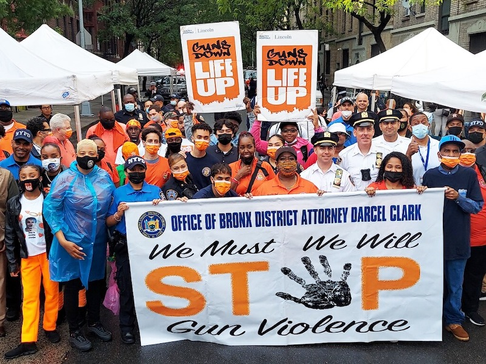

Fig.1 - Participants in a Community March Against Gun Violence in Bronx in June 2021. Credit: Norwood News
At a press conference on Nov.3, Mayor Bill DeBlasio’s touted NYPD’s recent data that shows NYS’c overall crime rates including shootings and murders dropped in October. However, the South Bronx, one of the areas hit hardest by gun violence since the pandemic, is still facing rising rates of gun violence incidents. The 44th Precinct which serves a portion of the southwest Bronx reported a 75% increase in shooting incidents for the last week of October.
“Given the all the situation we have with Covid... we have seen an increase, an increase of more gang violence and more shootings...we have one of the busiest, most traffic police precinct [44th Precint]” says Isa Martinez McDonald, Housing Services Director at New Destiny Housing Corporation. McDonald oversees NDHC’s portfolio of affordable housing buildings in the Bronx, including The Anderson, a 42 unit building located a few minutes from Yankee Stadium.
Sources: